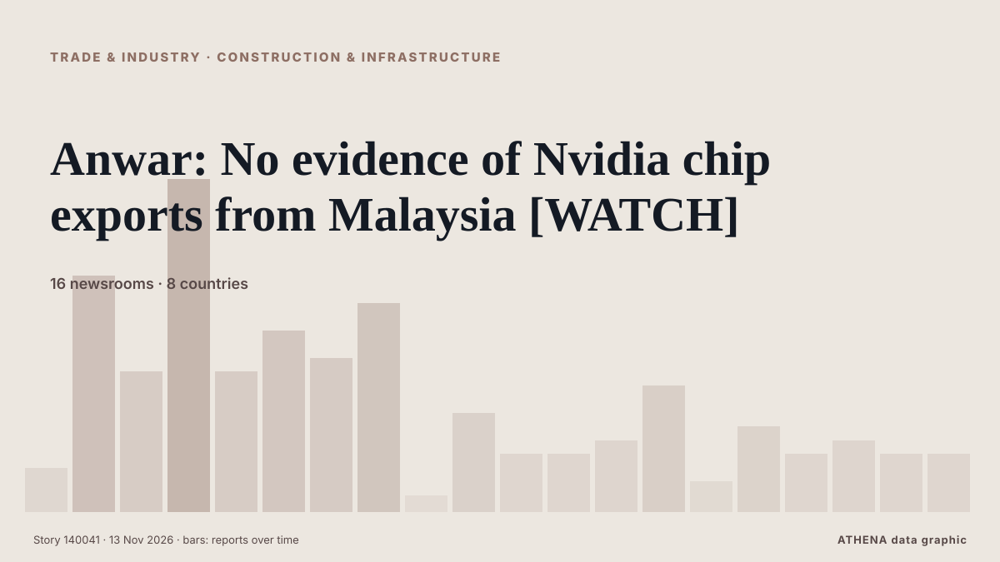

Trade, Industry & Infrastructure
SponsoredPresented by  Cybernetics and Artificial Intelligence Lab Welcome to the Cybernetics and Artificial Intelligence Laboratory, established at the Department of Business Administration of the National and Kapodistrian University of Athens. The lab is headed by Professor Dimitrios Thomakos. The lab aims to do research that can be published in top venues. Our research uses tools and methods of Artificial Intelligence, and lies in the following areas: - Forecasting - Decision making - Cyber security - Finance We are always looking forward to collaborating with exceptional students!
Cybernetics and Artificial Intelligence Lab Welcome to the Cybernetics and Artificial Intelligence Laboratory, established at the Department of Business Administration of the National and Kapodistrian University of Athens. The lab is headed by Professor Dimitrios Thomakos. The lab aims to do research that can be published in top venues. Our research uses tools and methods of Artificial Intelligence, and lies in the following areas: - Forecasting - Decision making - Cyber security - Finance We are always looking forward to collaborating with exceptional students!

Construction & infrastructureAnwar: No evidence of Nvidia chip exports from Malaysia [WATCH]
Reported by 16 outlets in 8 countries since 3 Nov. First reported by Mothership. ATHENA rates the risk 3.2/10 (moderate), with 84% confidence.
| 31 Oct | 36 |
|---|---|
| 1 Nov | 65 |
| 2 Nov | 128 |
| 3 Nov | 91 |
| 4 Nov | 93 |
| 5 Nov | 105 |
| 6 Nov | 75 |
| 7 Nov | 44 |
| 8 Nov | 49 |
| 9 Nov | 117 |
| 10 Nov | 142 |
| 11 Nov | 104 |
| 12 Nov | 66 |
| 13 Nov | 10 |
Four tankers struck by explosions in Hormuz: Iran
DUBAI: Four oil tankers were hit by explosions in the Strait of Hormuz, Iran’s military said on Thursday, adding that the vessels had ignored warnings and entered what it considers restricted areas… from Business Recorder
United Airlines Blocks A.I. Agents From Booking Flights
The carrier said that to protect customers’ information and comply with regulations, it was barring the digital assistants from logging into accounts and managing reservations. from New York Times Business
Turkish Aerobatic Team Flies Over Occupied Kyrenia Ahead of November 15
Turkish Air Force aerobatic aircraft have flown over Kyrenia ahead of November 15 celebrations, with the flight reported as a violation of the Nicosia FIR. from Greek City Times
More than one million in Lebanon face acute food insecurity, UN says
More than one million people in Lebanon face acute food insecurity, the United Nations warned on Wednesday, following years of war and economic crisis. from Naharnet
N. Korea's Kim inspects east coast naval base under construction, urges timely completion
SEOUL, Nov. 12 (Yonhap) -- North Korean leader Kim Jong-un has inspected a major... from Yonhap (English)
Ryanair changes bag drop rules for all European travellers
As of November 10th, passengers flying with Europe's biggest budget airline must check their luggage at least an hour before departure. from The Local Switzerland
Eurostar disruption after bomb alert at French train station
Passengers at St Pancras station in London were facing long queues after several services were disrupted following the threat. from Evening Standard (London)
Day 8 RSV 421 Flies Flag at Half-Mast to Honour Victims of Trakia Motorway Pile-Ups
About 50 other people were injured in the pile-ups along a section of the Trakia motorway, officials have said. from BBC News
Iran’s Revolutionary Guard says 2 oil tankers exploded in Strait of Hormuz
"One of the vessels is a supertanker; it is currently engulfed in flames following a powerful explosion," the Iranian Revolutionary Guard Corps (IRGC) Navy spokesperson said. from The Jerusalem Post
Iran warns of domestic gas shortages from war this winter
Iranian government officials have cautioned about impending gas shortages due to damage from ongoing conflict with the United States, potentially affecting major areas including Tehran. from Arab News
Iran says 3 tankers caught fire in Hormuz
The Revolutionary Guards did not specify the names or nationality of the tankers. from Free Malaysia Today
Oman rally to edge Libya in Arab beach soccer opener
MUSCAT, NOV 5Oman recovered from conceding in the opening minute to defeat Libya 3-2 at the Porto Said Beach Soccer Stadium in Egypt on Thursday, making a winning start to their Ar... from Oman Observer
Panama Canal increases daily transit capacity to 34 slots
The Panama Canal has increased its daily transit capacity to 34 booking slots and raised the maximum allowable draft for vessels using the Neopanamax locks. from Container News
Greek mayors and ruling party MPs rebel against new building density plans in Athens’ northern suburbs
Six mayors have appealed to Prime Minister Kyriakos Mitsotakis to withdraw proposed planning changes that could significantly increase construction in Athens’ northern suburbs, amid mounting… from ProtoThema English
Asia buys up African, Brazilian oil as shipping costs fall
Asian buyers are taking advantage of decreased shipping costs to purchase more African and Brazilian crude oil. from Arab News
Passenger held over hijack threat to Kolkata-Mumbai Air India flight
The passenger was handed over to the Netaji Subhash Chandra Bose International (NSCBI) Airport Police Station. from The Hindu
Get your data in order and set a course for greener shipping
There is cause for optimism in the shipping sector, and we are seeing more and more initiatives aimed at making shipping greener. from Container News
Cambodia ranks 138th globally in illicit trade vulnerability index
The Transnational Alliance to Combat Illicit Trade (TRACIT) Tuesday released a report placing Cambodia last among ASEAN members and 138th globally out of 158 countries, highlighting the Kingdom’s… from Khmer Times
Iran attacks Didamar island shipping navigation systems in Oman
Gulf exporters have been increasingly using workarounds to increase oil flows via Hormuz, such as ship-to-ship transfers off the coast of Oman. from The New Arab
Tankers continue to burn in the Middle East despite hopes for de-escalation
(Corrects in paragraph 4 to 'a Navig8 tanker', removing reference to 'Navig8 Messi'; it was not clear which Navig8 tanker was shown) Nov 10 (Reuters) - Despite market bets on a de-escalation in the… from Al-Monitor
Heating Costs Will Rise 7% on Average This Winter
People who use heating oil will see increases of around 70 percent because the war in Iran has greatly reduced supply of that fuel. from New York Times Business
Evergreen Line Resumes Suez Canal Transits with Ever Eon's Maiden Voyage
Evergreen Line returns to the Suez Canal, marking a significant shift in container shipping as Ever Eon completes its first transit. from SeaNews Türkiye
Russian Diesel Tanker Awaits Destination Off US East Coast
A tanker carrying the first cargo of Russian diesel for the United States has come to a halt off the US east coast, shipping data showed on Tuesday, with its operator saying its destination had not… from MarineLink
Noida Metro extension to landmark museum project and more: A look at key cabinet decisions
The Cabinet approved a hike in fertiliser subsidies, a ₹2,390-crore Noida Metro extension amid other key decisions. from Hindustan Times
Greece Cruise Tourism Shifts as Piraeus Loses 19% of Passengers
Corfu has surpassed 1 million cruise passengers this year, while Rhodes, Chania and Heraklion face declining traffic as geopolitical tensions and rising costs prompt operators to rethink their… from To Vima (English)
Russia Strikes 6 Major Power Substations Across Ukraine Overnight
Russia attacked six major power substations across Ukraine overnight on Wednesday, Nov. from Kyiv Post
Five workers, two NPRs killed in suspected Al-Shabaab ambush in Mandera
NAIROBI,Kenya, Nov 10-Eight people, including five road construction workers, two National Police Reservists (NPRs) and a driver, have been killed in a suspected Al-Shabaab ambush targeting a… from Capital FM
Toyota to bring mini trucks to US market
The automaker will invest $34 million into the initiative and add 50 jobs. from The Independent
ASICS warehouse drones quickly find misplaced inventory
ASICS is saving time and money using drones to check for misplaced inventory. from FreightWaves
Abeille Marengo Sails to Begin Greece-Cyprus Cable Surveys as Turkey Claims Its Consent Was Obtained, Athens Pushes Back
The French research vessel Abeille Marengo sailed from the port of Heraklion at 6:26 p.m. on Tuesday, November 10, to begin seabed surveys for the Greece-Cyprus electricity interconnection. from The National Herald
Uzbekistan, Georgia aim to deepen economic and transport cooperation
President Shavkat Mirziyoyev met with Georgian President Mikheil Kavelashvili in Turkey on November 11 during his working visit to the country, with talks focusing on expanding bilateral trade… from Kun.uz (English)
Honda to invest $3B in new Ohio hybrid vehicle plant
The factory will create 2,000 jobs, and as part of Honda’s focus on hybrids and swift development, it’s keeping close to the automaker’s existing U.S. footprint. from Manufacturing Dive
AD Ports Group posts record Q3 2026 profit as UAE container volumes fall 57%
Abu Dhabi, UAE (Ports Europe) November 11, 2026 – AD Ports Group reported record net profit of about €237 million in Q3 2026, up 64%, as shipping growth offset weaker UAE port volumes. from Ports Europe
Tong Hsing buys Global Testing to become integrated OSAT provider
Tong Hsing Electronic Industries (THEIL), a semiconductor packaging company under the YAGEO Group, said its board has approved the acquisition of a 100% stake in Singapore-listed Global Testing… from DigiTimes Asia